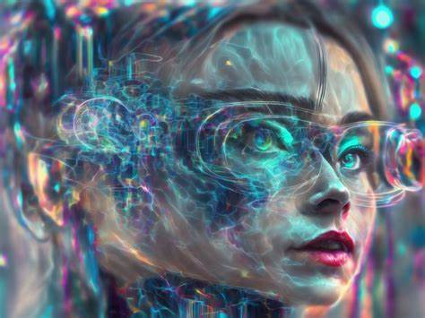
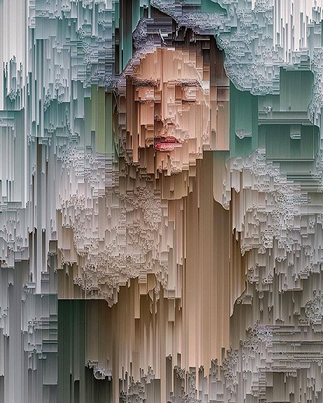
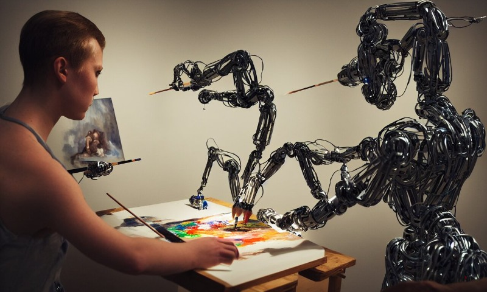

Creación de Arte Generativo
¿Qué es el Arte Generativo?

El arte generativo es un proceso en el que los artistas utilizan algoritmos y sistemas automatizados para crear obras de arte. Estos sistemas pueden incluir inteligencia artificial, programación, y otras tecnologías digitales que permiten generar arte de manera autónoma o semi-autónoma.
Técnicas y Herramientas Comunes
.jpg)
Algoritmos Evolutivos: Utilizan principios de evolución y selección natural para generar y refinar obras de arte.
Redes Neuronales: Modelos de IA que pueden aprender y replicar estilos artísticos, como las redes generativas antagónicas (GANs).
Programación Generativa: Uso de lenguajes de programación como Processing o p5.js para crear arte visual y animaciones.
Sistemas Basados en Reglas: Definen un conjunto de reglas que la máquina sigue para crear arte, permitiendo variaciones infinitas dentro de esos parámetros.
Ejemplos Destacados
.jpg)
DeepDream: Un proyecto de Google que utiliza redes neuronales para transformar imágenes en alucinantes obras de arte.
AARON: Un programa desarrollado por el artista Harold Cohen que crea dibujos y pinturas de manera autónoma.
Obras de GANs: Las GANs han sido utilizadas para crear retratos, paisajes y otras formas de arte que a menudo son indistinguibles de las obras humanas.
Aplicaciones en Diferentes Disciplinas

Artes Visuales: Creación de pinturas, esculturas y gráficos digitales.
Música: Composición de piezas musicales originales utilizando algoritmos.
Literatura: Generación de poesía y prosa mediante modelos de lenguaje.
Diseño: Creación de patrones y diseños para moda, arquitectura y productos.
Ventajas del Arte Generativo

Innovación y Experimentación: Permite explorar nuevas formas y estilos que podrían ser difíciles de imaginar manualmente.
Eficiencia: Puede producir grandes cantidades de arte en poco tiempo.
Personalización: Facilita la creación de obras personalizadas para individuos o audiencias específicas.
Desafíos y Consideraciones
.jpg)
Originalidad: La cuestión de quién es el verdadero autor de una obra generada por IA.
Calidad: Asegurar que las obras generadas sean de alta calidad y tengan valor artístico.
Ética: Consideraciones sobre el uso de datos y la posible reproducción de sesgos en los algoritmos.
El arte generativo está transformando la manera en que entendemos y creamos arte, abriendo nuevas posibilidades y planteando preguntas interesantes sobre la naturaleza de la creatividad.